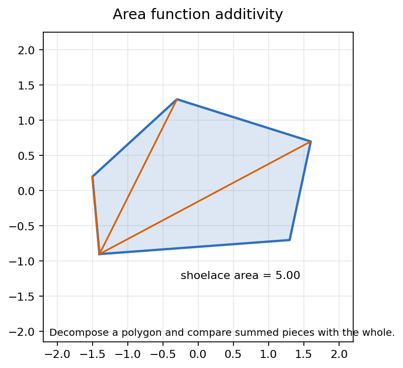
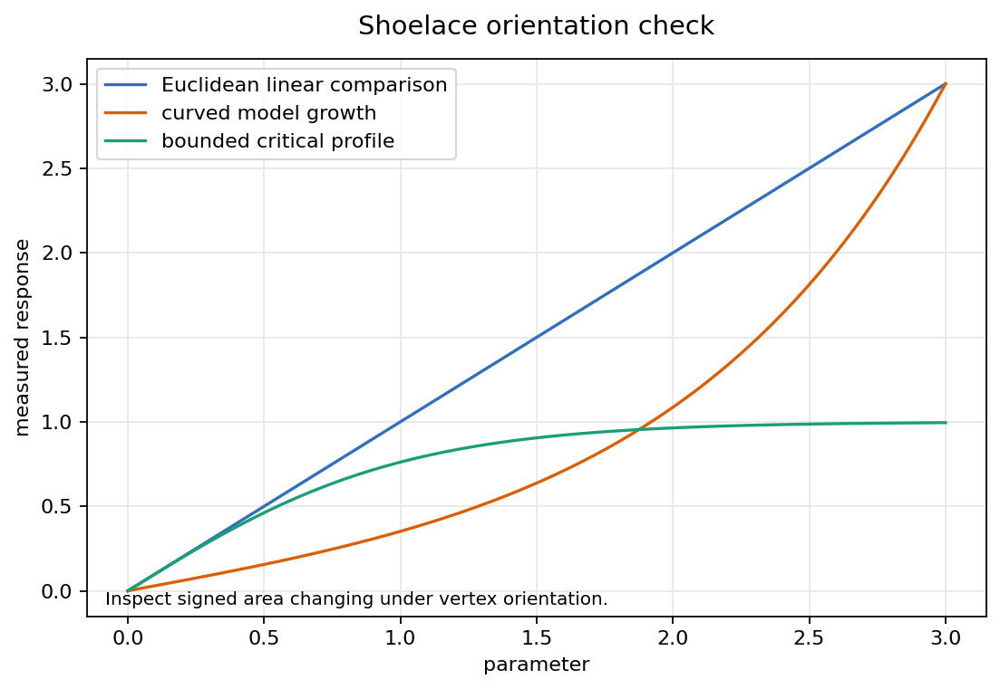
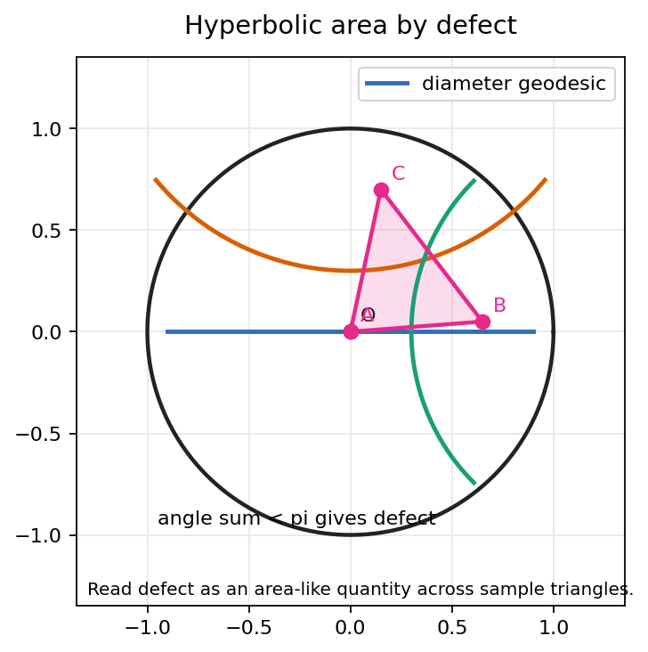
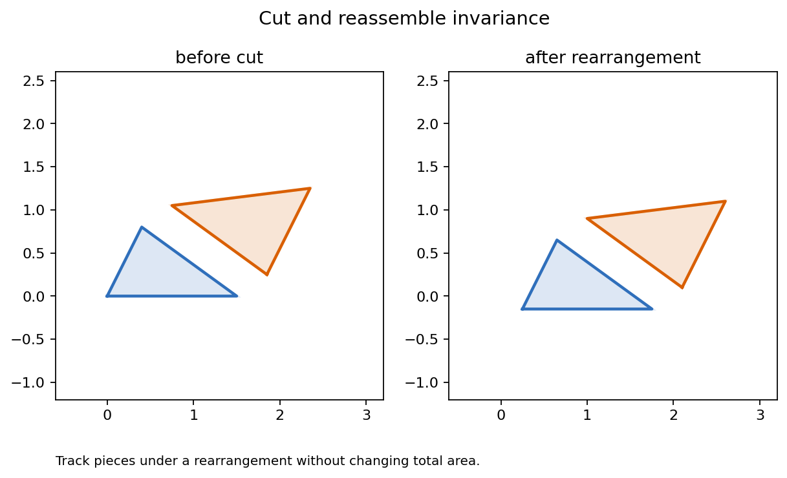

Area as an axiomatized function, Euclidean polygon computation, hyperbolic defect, and Bolyai-style cut-and-reassemble invariance.
How does a number assigned to a region become a geometric invariant across models?
Source orientation: printed pages 248-284; PDF pages 263-299.
An area function assigns a real number \(A(R)\) to a permitted region \(R\), subject to rules that make the number independent of how the region is drawn.
The last identity assumes \(R_1\) and \(R_2\) have disjoint interiors and meet only along boundary pieces.
If a proposed formula changes after a rigid motion or double-counts overlapping pieces, it has failed before any advanced theorem begins.

Notebook artifact: area-function-additivity.png
If \(R\) is cut into finitely many regions \(R_i\) whose interiors do not overlap, then
Internal edges are bookkeeping devices. They separate pieces, but they do not contribute a second copy of area.
Triangulate a polygon, compute each triangle, then verify that another triangulation gives the same total.
For vertices \(p_i=(x_i,y_i)\) listed cyclically, with \(p_{n+1}=p_1\),
Reversing the vertex order reverses the sign. Ordinary area is \(|A_{\mathrm{signed}}|\).
The boundary sum telescopes across triangulations and behaves predictably under rigid motions.

Notebook artifact: shoelace-orientation-check.png
For \(P_1=(0,0)\), \(P_2=(1,2)\), \(P_3=(3,1.5)\), \(P_4=(3,0)\):
The diagonal \(P_1P_3\) splits the quadrilateral into two triangles whose areas are \(2.25\) and \(0.75\).
Same region, same orientation convention, different decomposition, same total.
Declare the unit square to have area \(1\). Rectangles then inherit \(bh\) by subdivision and scaling.
Every triangle pairs with a congruent copy inside a parallelogram, giving \(A=\frac12 bh\).
Triangulate, sum, and use additivity to show that changing the triangulation does not change the answer.

Notebook artifact: hyperbolic-area-defect-table.png
For curvature \(-\kappa^2\), divide the defect by \(\kappa^2\).
Hyperbolic triangles have angle sum less than \(\pi\). The missing angle is not an error; it measures area.
Euclidean area depends on side scale. Hyperbolic defect ties area directly to curvature and angles.
A geodesic split creates two triangles. The new angles along the cut are supplementary.
The formula survives cutting because boundary bookkeeping cancels in exactly the way area requires.
Angles drawn in the disk are the hyperbolic angles, so defect can be read from the model picture.
Euclidean area inside the disk is a visual artifact. Hyperbolic area is not the amount of ink enclosed on the page.
The notebook stores a local interactive companion at ../html/parameter-lab.html.
Cut \(P\) into pieces \(P_i\), move each piece by an isometry \(g_i\), and reassemble a new region \(Q\).
The total area is insensitive to the chosen finite rearrangement when the pieces fit without overlap.
Scissors arguments replace direct measurement with an explicit equivalence of regions.

Notebook artifact: bolyai-scissors-invariance.png
Signed area can be negative. It records orientation, so it is a diagnostic tool rather than a nonnegative area function.
In a model, the drawn Euclidean size may not be the intrinsic area. The Poincare disk is the main warning case.
Additivity needs disjoint interiors. Overlap causes double counting unless an inclusion-exclusion correction is supplied.
For each failure, name the axiom that breaks and state one extra hypothesis that would repair the computation.
| Check | Recorded Value |
|---|---|
| Shoelace square | 1.0 |
| Triangle area sample | 1.25 |
| Hyperbolic defect sample | 0.7415926535897928 |
| Visual artifact count | 4 |
Given a new model and a proposed area formula, which axiom would you test first, and what failure example would you try to construct?